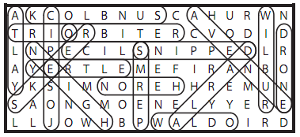

The blanks under each film title can be filled with the three stars of each movie:
Death Becomes Her
BRUCE WILLIS GOLDIE HAWN MERYL STREEP
GoodFellas
JOE PESCI RAY LIOTTA ROBERT DE NIRO
Speed
DENNIS HOPPER KEANU REEVES SANDRA BULLOCK
The word search grid doesn’t contain their names, though; instead it contains pairs of entries made up of the same letters:
WILBUR/SLICE YERTLE/PERMS NEIGH/WALDO EPIC/JOSE YALTA/TRIO ORBITER/DRONE SNIPPED/HERON AVENUE/REEKS DARLA/SUNBLOCK
The leftover letters spell out six more words (A-Z, like everything else we’ve seen):
CHURN CODE FIRM HE-MAN MONEY YELLOWBIRD
which can be recombined to make:
DON AMECHE WILFORD BRIMLEY HUME CRONYN
...the three stars of COCOON, which is the answer to this puzzle.